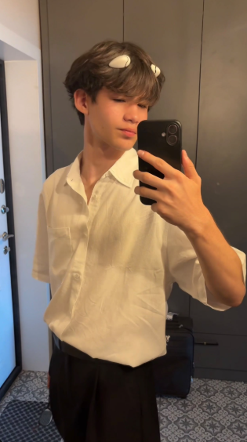
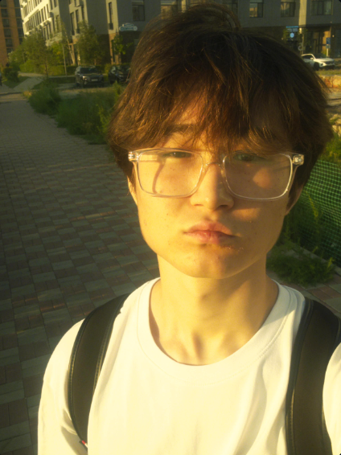
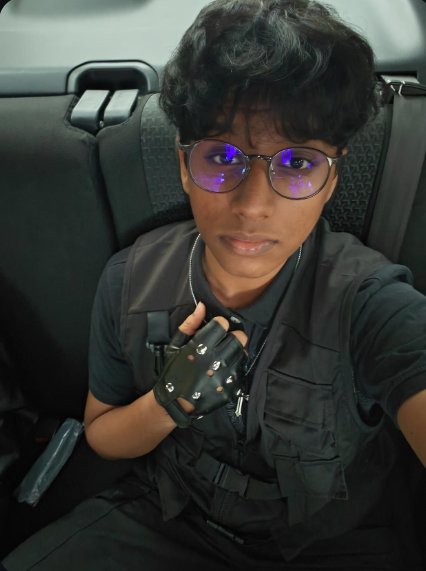
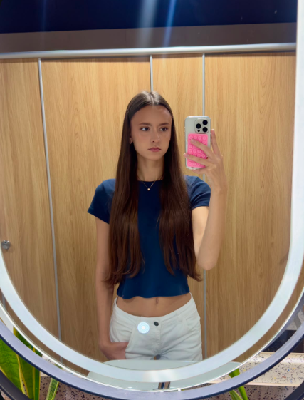

Favourite Cyberpunk Character: Omi
Reason why: Because she proves that no matter how hard life gets, you must never let hatred corrupt your heart.
A little bit about myself: I love crows and vocaloid
Favourite quote from the show:"If you gotta kill,kill. If you gotta burn it all to the ground, then let it burn"

Favourite Cyberpunk Character: Lucy
Reason why: Because she is so pretty, and her voice actor is so good!
A little bit about myself: "Obsessed with stitch and food!"
Favourite quote from the show:"I'll Take you to the Moon! I promise"

Favourite Cyberpunk character: David Martinez
Reason why: He was never special. He was just a kid with dreams of his own
A little bit about myself: I love my girlfriend and matcha, and reading feminist literature
Favourite quote from the show:"Your breaking my heart miho"

Favourite cyberpunk character: David Martinez
Reason why:Because he recovered from a personal loss and rebuilt himself
A little bit about myself: Enthusiastic, loves watching movies and music
Favourite quote from the show:"There's no place like night city, if you wanna hide."

Favourite Cyberpunk Character:Weak
Reason why: He's not a stepfather, he's a father that stepped up
A little bit about a myself I enjoy basking in the great light of the sun.
Favourite quote the from show:"Sorry, Wish we could go to the Moon together"